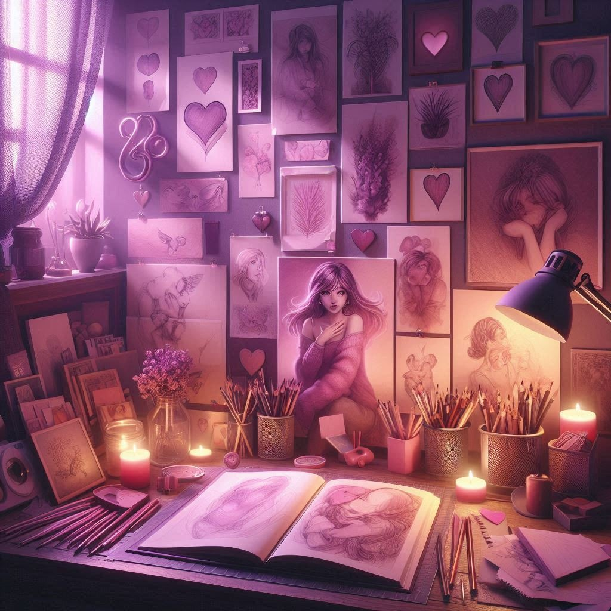
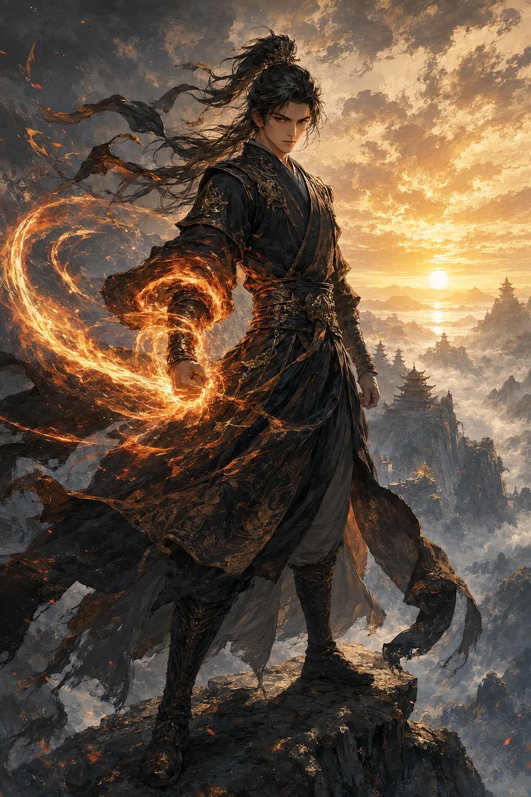
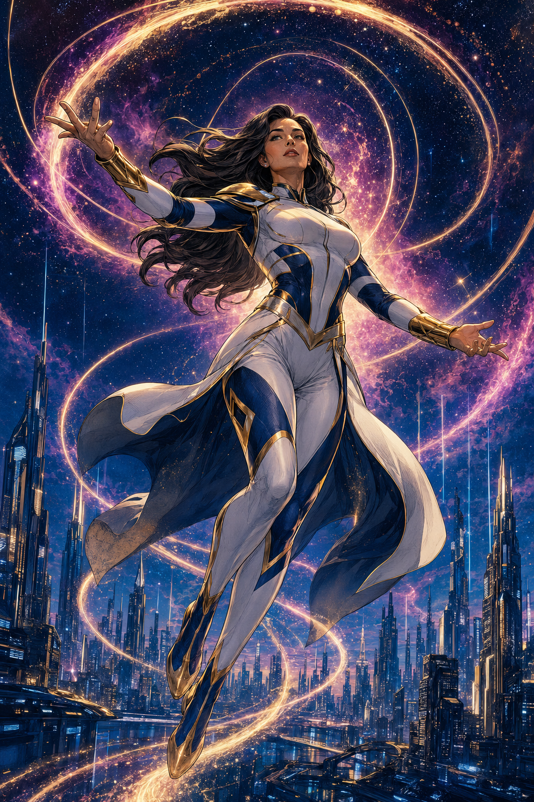

After the Rain Letters
Cartas anónimas dentro de libros devueltos conectan a dos personas que todavía no se conocen.
Mi espacio de lectura
Todo lo que lees, lo que esperas y lo que deseas recordar, reunido en un mismo lugar con tu progreso y tus notas personales.

Seguimiento personal
Elige otro filtro o visita el explorador para añadir una nueva historia.
Recuerdos personales
Tus pensamientos también forman parte de la historia. Guarda impresiones, escenas favoritas y todo aquello que quieras recordar.
Gestionar mi colecciónBasado en tu colección
Cartas anónimas dentro de libros devueltos conectan a dos personas que todavía no se conocen.

ManhuaUn camino de perseverancia, poder y descubrimientos a través de reinos cada vez más vastos.

Cómic occidentalUna guardiana cósmica protege la ciudad que une dos galaxias y escucha el pulso de las estrellas.
Magia antigua, criaturas feéricas y una protagonista que aprende a reconstruir su propio lugar.
Siempre queda una historia